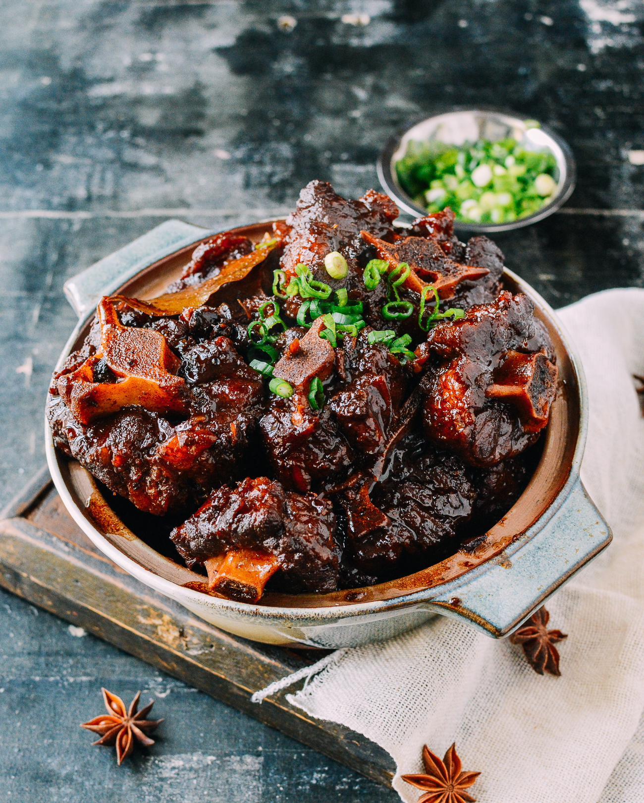

oxtails
Oxtials

Description
This Jamaican Oxtail Recipe is what you need to get perfectly juicy and tender oxtails that delights the soul.
Come discover all the delicious details of this tantalizing and captivating dish! Stewed oxtails is a big part of Jamaican culture.
For many Jamaicans, oxtail is the ultimate comfort food and is a Sunday dinner favourite. Growing up, it’s what my mother would prepare as a treat.
That means we never got it often, but when we did, it was delightful and satisfying.
On those special occasions, we would look forward to our plate of oxtail with rice and peas, piece ah fry chicken and wid likkle oxtail gravy on the side.
Now that I’m a mom, I find joy in carrying on this Sunday dinner tradition.
Even though cooking oxtail requires a bit of work, believe me when I say that all the love you get in return makes it all worth it.
Ingredients
- 2 kg oxtail stew
- 2 - 3 tsp salt or to taste
- 1 tsp black pepper
- 1 tsp allspice powder
- 2 tsp ginger powder
- 2 tsp onion powder unsalted
- 2 tsp garlic powder unsalted
- 1 tsp paprika optional
- 1 tsp dried thyme leaves
- 1 - 2 tbsp soya sauce msg-free
- 1 tbsp Worcestershire sauce msg-free, optional
- 1 - 2 tsp scotch bonnet pepper chopped, (to taste)
- 4 - 6 cloves garlic peeled, crushed and finely chopped
- 1 small white or yellow onion chopped
- 1 inch ginger root crushed
- 8 - 10 pimento seeds
- 3 sprigs fresh thyme
- ¼ green bell pepper chopped
- 3 stalks scallion (green onion) chopped
- 1 small tomato diced
- ½ cube Knorr chicken bouillon or 1 tsp all-purpose seasoning
- 1 can broad or butter beans drained, optional
- 2 - 3 tbsp ketchup
Precook (To make the browning)
- 1 tsp cooking oil
- 3 tbsp brown sugar to make the browning
Instructions
How to Clean the Oxtails
- In a large bowl, add the oxtails then add enough tap water to cover it.
Add ¼ cup vinegar or lime juice or lemon juice to the bowl.
Rub each piece of the oxtails to remove any unwanted debris.
If there is any excess fat on the oxtails, use a kitchen scissors or sharp knife to remove it.
Rinse then drain all the liquid from the oxtails.
How to Season the Oxtails
- In the same bowl, season the oxtails with salt, black pepper, paprika, allspice, onion powder, garlic powder, ginger powder,
dried thyme leaves, soya sauce, and Worcestershire sauce.
Thoroughly rub the seasoning into the oxtails by hand or using a large fork or wooden spoon.
Prepare (cut) the fresh seasoning (onion, garlic, ginger, thyme, tomato, scotch bonnet pepper, bell pepper, scallion, and pimento seeds) then divide them into half.
Add half the portion of the fresh herbs and spices to the oxtails and rub in well.
Set aside the remaining half of fresh seasoning until later on in the cooking process.
Cover the seasoned oxtails and let it marinate for 6 - 8 hours or move immediately to the cooking method of choice.
How to Cook Oxtails on the Stovetop
- In a large skillet, heat the cooking oil on medium heat. Add the brown sugar, stirring quickly and thoroughly for about
1 minute or until the sugar melts and turns dark brown.
Immediately add the seasoned oxtail and allow each side of the meat to brown for 3-4 minutes.
Using the same bowl used to season the oxtail, add 1 cup water and mix well.
When both sides of oxtail have browned, add the water from the bowl, stir the pot then cover it and let the meat cook for 10 - 15 minutes.
Next, add enough water to cover the meat. Stir the pot then cover it and let the oxtail cook on high heat for 2 ½ to 3 hours. Remember to stir the pot every 10 minutes.
Check the pot regularly to make sure there is enough water to cover the meat and top it up each time it runs low. After about 3 hours, taste a small piece of the
meat to check if it's fully cooked. If the meat is not as tender as you'd like it, cook it for another 15 minutes.
How to Cook Oxtails in a Pressure Cooker
- Add 3 tbsp. sugar and 1 tsp cooking oil in an uncovered pressure cooker until it caramelizes.
Add the seasoned oxtails to the pot and cook each side for 3-4 minutes or until the oxtails have completely 'browned' on both sides.
Add only enough water to cover the meat (about 1 inch high). Cover the pot and pressure cook the oxtails for 25 - 30 minutes.
(Test the oxtail in 25 minutes to determine if it has the desired texture.) If necessary, pressure cook it for 5 - 10 minutes more.
Making the Oxtail Gravy
- When the oxtails are fully cooked (tender), add ½ of the chicken bouillon cube, ketchup (or 1 tbsp. brown sugar) and the remaining portion of chopped fresh seasoning.
Drain and discard the liquid from the can of beans, then add the beans to the pot.
If the water has dried out, add enough water to cover the meat.
Stir the pot and let the oxtails cook on medium heat for 10 - 15 minutes, stiring occasionally.
Check the gravy for the desired consistency and taste.
If the gravy is too thin, leave the pot uncovered to allow the gravy to thicken (approximately 10 minutes). OR - add 1 tsp. of cornstarch/flour diluted in 2
tablespoons of cool water to thicken the gravy.
If your sauce needs more salt, you can add a bit more (to taste), stir the pot and let it simmer for 5 minutes.
Bless up and enjoy it!